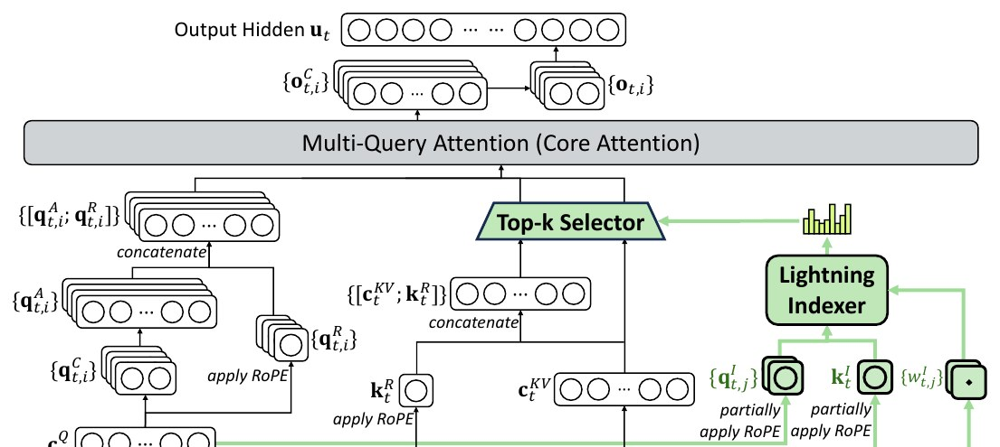
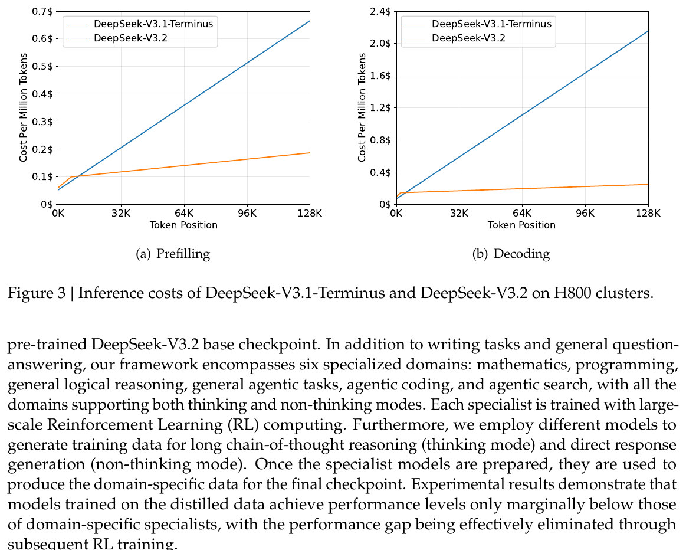
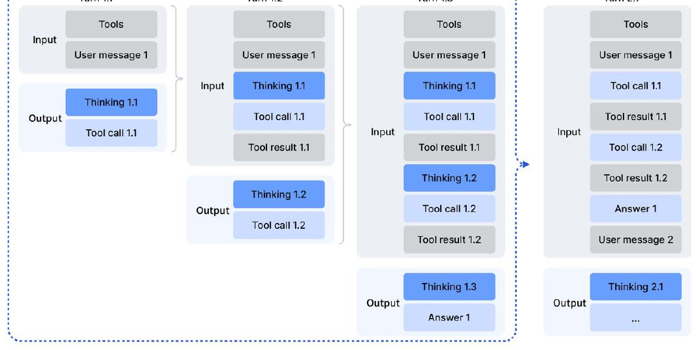
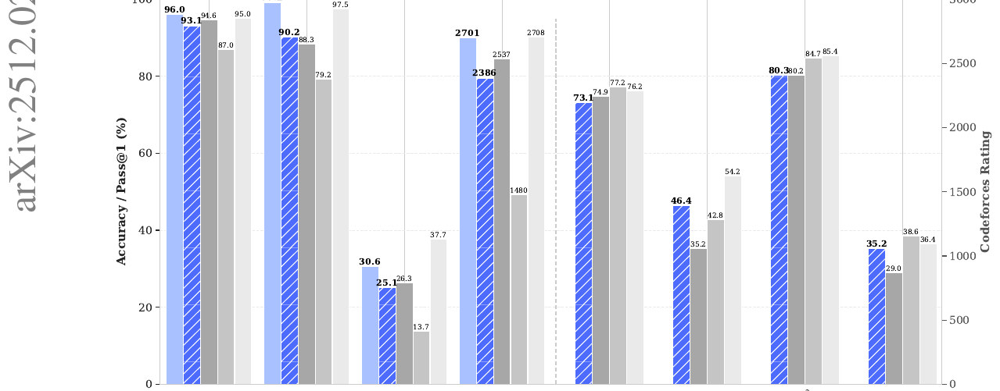
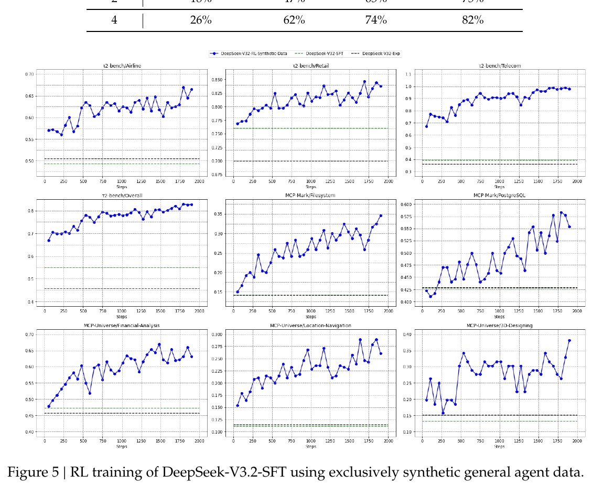
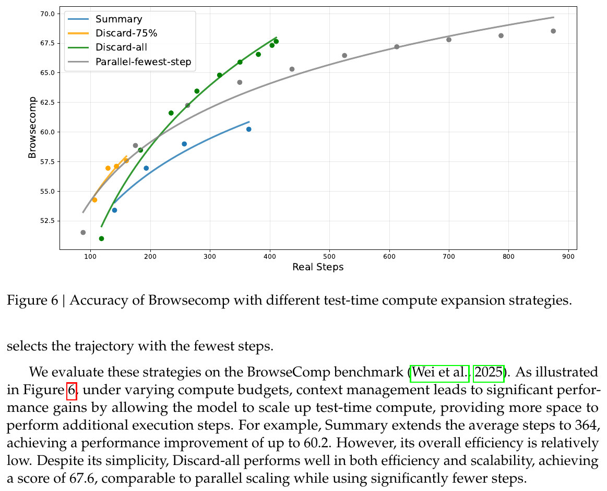

速览
一处架构改动，一套更稳的 GRPO，一条 Agent 任务合成流水线。
五条要点
DSA：先蒸馏 indexer，再整体适配稀疏
lightning indexer 少头、ReLU、可跑 FP8，给每个历史 token 打分，取 top-2048 个 MLA 潜在 KV 做注意力§2.1。续训两段：只训 indexer 的 dense warm-up（1000 步，2.1B token），再全参 sparse 训练（15000 步，943.7B token）§2.1.1。
后训练：专家蒸馏 + 一段混合 RL
6 个专家领域（数学、编程、逻辑、通用 Agent、Agent 编码、Agent 搜索）+ 写作 / 问答，每个专家先做大规模 RL，再蒸馏回同一个 checkpoint；然后把推理、Agent、对齐合并成一个 GRPO 阶段，跑数千步§3。
让 RL 能放大的四个补丁
无偏 KL 估计、只屏蔽高度离策略的负优势序列、Keep Routing（MoE 路由回放）、Keep Sampling Mask（top-p 截断掩码回放）§3.1。都只有定性结论，没有数值消融。
Agent 数据靠合成，且被验证能泛化
通用 Agent 任务是「难解易验」的 <环境, 工具, 任务, 验证器>，用 pass@100 非零过滤§3.2.3。50 条抽样里 V3.2-Exp 只有 12% pass@1、GPT-5-Thinking 62%表 5；只在合成数据上 RL 就能在 τ²-bench、MCP-Mark、MCP-Universe 上涨分图 5。
推理追平 GPT-5-High，Speciale 冲金牌
V3.2-Thinking HMMT Feb 92.5（GPT-5-High 88.3），HLE 25.1（26.3）表 2。Speciale HMMT Feb 99.2、IMOAnswerBench 84.5，但输出 token 明显更多（如 CodeForces 77k vs Gemini 22k）表 3。
架构：DSA 落在 MLA 的 MQA 模式上
MoE 主体、MLA 都沿用 V3.1-Terminus；唯一的新部件是 lightning indexer + top-k 选择器（图 2 绿色部分）。

示意：依据 §2.1 公式 (1)–(4) 与图 2 绘制，省略 RoPE 拼接与输出投影。qI、wI 原文只说「由 ht 派生」，具体从哪个中间量投影出来以官方代码为准；虚线表示 indexer 的输入被 detach，只受 KL 损失 LI 训练，主模型只受语言建模损失§2.1.1。
四个公式 §2.1 · §2.1.1
选 ReLU 是出于吞吐考虑§2.1。
为什么用 MLA 的 MQA 模式
- 要从 V3.1-Terminus 续训，所以在 MLA 上实例化 DSA§2.1。
- kernel 层面一个 KV 条目要被多个 query 共享才高效（引 NSA，Yuan et al. 2025），所以用 MQA 模式：每个潜在向量被该 token 的所有 query 头共享§2.1。
- V3.1-Terminus 训练和 prefill 用 MHA 模式、decode 用 MQA 模式附录 A · 图 7。
- 短序列 prefill 时，V3.2 专门实现了用带掩码的 MHA 模式模拟 DSA，短上下文下更快§2.3。
| 维度 | DeepSeek-V3.1-Terminus | DeepSeek-V3.2 | 来源 |
|---|---|---|---|
| 注意力 | 稠密 MLA | MLA（MQA 模式）+ DSA：indexer 选 top-2048 KV | §2.1 |
| 核心注意力复杂度 | O(L²) | O(Lk)，k ≪ L；indexer 仍 O(L²) 但计算量远小于 MLA | §2.3 |
| 其余结构 | 原文只说「唯一架构改动是 DSA」；层数、专家数、总 / 激活参数量本文均未列出 | §2.1 | |
| 上下文 | 128K（已做长上下文扩展） | 128K | §2.1.1 · §4.1 |
| indexer 超参 | — | 头数 HI、维度 dI：原文未披露，以开源代码为准 | §2.1 |

DSA 没掉点吗？原文只给了定性证据
- 标准基准：2025 年 9 月对 V3.2-Exp 做了一组评测，与 V3.1-Terminus「表现相近」，短 / 长上下文都没观察到明显退化§2.2。本文未给数值表
- 人类偏好：两者用相同后训练，2025-11-10 的 ChatbotArena Elo「接近」§2.2。未给 Elo 数字
- 长上下文：第三方 AA-LCR 上 V3.2-Exp 推理模式比 V3.1-Terminus 高 4 分；Fiction.liveBench 多个指标都更好§2.2。
数据：续训数据一笔带过，Agent RL 数据讲得最细
预训练语料、SFT 数据量、各领域配比都没有给比例，所以本节不画比例条；只有表 1 给了四类 Agent 任务的条数，下图画的是条数（从 0 起）。
4.1 已披露规模一览
| 数据 | 已披露内容 | 规模 | 来源 |
|---|---|---|---|
| 续训（continued pre-training） | |||
| Dense warm-up | 分布与 V3.1-Terminus 的 128K 长上下文扩展数据「完全一致」 | 1000 步 × 16 条 × 128K = 2.1B token | §2.1.1 |
| Sparse 训练 | 同上 | 15000 步 × 480 条 × 128K = 943.7B token | §2.1.1 |
| 该扩展数据的来源 / 构成 | 原文未披露（本文不重述 V3.1 的数据） | §2.1.1 | |
| 专家蒸馏（SFT） | |||
| 领域 | 数学、编程、通用逻辑推理、通用 Agent、Agent 编码、Agent 搜索 6 个专家域 + 写作、通用问答；均含 thinking / non-thinking 两种模式 | 条数 原文未披露 | §3 |
| 生成方式 | 每个专家从同一 V3.2 base 微调、经大规模 RL；再由专家生成本领域数据。thinking 与 non-thinking 数据由不同模型生成 | 配比 原文未披露 | §3 |
| 冷启动样例 | 三种 system prompt：推理（<think>）、非推理 Agent（工具调用格式）、「在思考中调用工具」 | 附录只给示例模板 | §3.2.2 · 表 6–8 |
| RL | |||
| Agent 任务 | 4 类，见下表 1 | 合计 85,267 条 推算（引言写「85,000」） | 表 1 · §1 |
| 推理 / 通用任务 | 推理用规则结果奖励；通用任务用逐 prompt rubric 的生成式奖励模型 | 条数 原文未披露 | §3 |
| Speciale 额外数据 | 只用推理数据；并入 DeepSeekMath-V2 的数据集与奖励方法（数学证明） | 原文未披露 | §3 |
4.2 Agent RL 任务（表 1）
| 任务 | 条数 | 环境 | prompt |
|---|---|---|---|
| code agent | 24,667 | 真实 | 抽取 |
| search agent | 50,275 | 真实 | 合成 |
| general agent | 4,417 | 合成 | 合成 |
| code interpreter | 5,908 | 真实 | 抽取 |
「真实环境」= 真实 web 搜索 API、编码工具、Jupyter；但即便环境是真的，prompt 也不来自真实用户交互，而是从互联网抽取或合成§3.2.3。条数是任务数，不是 token 量，不能当训练配比看。
4.3 四条合成流水线
General agent：「难解易验」的环境合成 §3.2.3
造数据库
给定任务类别（如旅行规划）和带 bash + 搜索工具的沙箱，Agent 从网上生成或检索数据，存入沙箱数据库。
造工具
合成一组任务专用工具，每个工具是一个函数（示例里 15 个，如 get_all_hotels_by_city、submit_result）。
造任务 + 解 + 验证器
先出简单任务及 Python 解函数、验证函数。解函数只能调用工具或做逻辑计算，不能直接读库；解不过验证就改解或改验证器。随后迭代加难，工具不够就扩充。
pass@100 非零
得到数千个 <环境, 工具, 任务, 验证器>；用 V3.2 跑 RL，只保留 pass@100 > 0 的，剩 1,827 个环境、4,417 个任务。
示例任务：杭州出发的三日游，城市 / 酒店 / 景点 / 餐厅不能重复；第二天按酒店价位分三档约束餐饮总价、评分和门票（如酒店 ≥ 800 元时午晚餐合计 < 350 元、评分均 ≥ 4.0、门票 < 120 元）。搜索空间大，但校验一个候选解很容易§3.2.3 示例。
合成任务够不够难？ 表 5
从通用合成任务中随机抽 50 条：
| Pass@K | V3.2-Exp | Sonnet-4.5 | Gemini-3.0 Pro | GPT-5-Thinking |
|---|---|---|---|---|
| 1 | 12% | 34% | 51% | 62% |
| 2 | 18% | 47% | 65% | 75% |
| 4 | 26% | 62% | 74% | 82% |
V3.2-Exp 正是做合成的那个模型。样本只有 50 条。
冷启动：用 system prompt 拼出「边想边调工具」 §3.2.2 · 表 6–8
- 手里有两类现成数据：带推理的非 Agent 数据、不带推理的 Agent 数据。
- 不同任务配不同 system prompt。表 6：要求先在 <think></think> 里推理再给答案；表 7：只给工具说明和调用格式（Jupyter 120 秒超时）；表 8：要求在 <think> 内多次调 Python，最多 20 次执行，尽早调用，最终解答里不再调工具。
- 作者承认这样得到的轨迹不稳，但「偶尔」能生成想要的轨迹，足够给后续 RL 起步。
训练配方
续训的超参写得很全；后训练只给了做法，GRPO 的 ε、β、δ、组大小 G、top-p 值、学习率、batch 都没给。
5.1 从 V3.1-Terminus 到 V3.2
Dense warm-up
- 训练
- 只训 indexer
- 注意力
- 保持稠密
- LR
- 1e-3
- 步数
- 1000 × 16 × 128K
- token
- 2.1B
目标分布：主注意力跨头求和、按序列 L1 归一§2.1.1。
Sparse 训练
- 训练
- 全参 + indexer
- top-k
- 2048
- LR
- 7.3e-6
- 步数
- 15000 × 480 × 128K
- token
- 943.7B
indexer 输入 detach，只受 LI；主模型只受 LM loss§2.1.1。
专家蒸馏
- 专家
- 6 域 + 写作 / QA
- 模式
- thinking / non-thinking
- 专家训练
- 大规模 RL
蒸馏模型只比专家略差，差距在后续 RL 中被抹平§3。
混合 RL（GRPO）
- 合并
- 推理 + Agent + 对齐
- 步数
- 数千步
- 算力
- > 10% 预训练
单阶段，避免多阶段的灾难性遗忘；后训练同样用稀疏注意力§3 · §4.1。
奖励设计
- 推理 / Agent：规则结果奖励 + 长度惩罚 + 语言一致性奖励§3
- 通用任务：生成式奖励模型，每个 prompt 各有 rubric
- 搜索 Agent 的 helpful 部分：多维 rubric + GRM§3.2.3
- V3.2 正式版受「长度约束奖励模型」限制，去掉后还能涨§4.1
V3.2-Speciale
- 只用推理数据，RL 时减小长度惩罚§3
- 并入 DeepSeekMath-V2 的数据与奖励方法，强化数学证明
- 代价：token 效率明显差于 Gemini-3.0-Pro；正式版因此收紧了长度约束§4.2
工具调用中的思考
- R1 做法（第二轮消息到来就丢推理）会让模型每次工具调用都重推一遍，浪费 token§3.2.1
- 新规则：只在新用户消息到来时丢历史推理；只追加工具输出时保留；丢推理时保留工具调用与结果
- Roo Code、Terminus 等用 user 消息模拟工具交互的框架享受不到，建议改用 non-thinking 模式

5.2 让 GRPO 能放大的四个做法（§3.1）
无偏 KL 估计 式 (7)
用 πθ/πold 重要性比修正 K3 估计器，使 KL 梯度无偏。原 K3 在 πθ ≪ πref 的 token 上会给出无界的大权重，噪声累积导致不稳。另外：不同领域适合不同 KL 强度，数学等领域用很弱的 KL 甚至不用反而更好。
Off-Policy Sequence Masking 式 (8)(9)
一批 rollout 拆多个 mini-batch 更新，加上推理框架与训练框架实现差异，都会造成离策略。对优势为负、且序列平均 log(πold/πθ) > δ 的序列整条置零。πold 直接取推理框架返回的采样概率，两种离策略一起覆盖。δ 取值未给。
Keep Routing
记录推理时 MoE 的专家路由，训练时强制走同一路径，避免训练 / 推理路由不一致造成参数子空间突变。作者称这对 MoE 的 RL 稳定性「至关重要」，且自 DeepSeek-V3-0324 起就在用，不是本文新提§3.1。
Keep Sampling Mask
top-p / top-k 截断让 πold 与 πθ 的动作空间不一致，破坏重要性采样。做法：保留采样时的截断掩码，训练时同样套到 πθ 上。经验上 top-p + 该掩码能保住 RL 中的语言一致性。
超参清单：原文给了什么、没给什么§2.1.1 · §3.1
| 项 | 值 | 来源 |
|---|---|---|
| warm-up LR / 步数 / batch | 1e-3 / 1000 / 16 × 128K | §2.1.1 |
| sparse LR / 步数 / batch | 7.3e-6 / 15000 / 480 × 128K | §2.1.1 |
| top-k | 2048 | §2.1.1 |
| RL 步数 | 「数千步」 | §3 |
| RL 算力 | > 预训练成本的 10% | §1 · §4.1 |
| GRPO ε、β、组大小 G、δ | 原文未披露 | §3.1 |
| top-p 取值、长度惩罚形式、语言一致性奖励形式 | 原文未披露 | §3 |
| SFT 轮数、学习率、数据量 | 原文未披露 | §3 |
| indexer 头数 HI、维度 dI | 原文未披露 | §2.1 |
评测
统一温度 1.0、上下文 128K；工具类基准用标准 function call、thinking 模式§4.1。开源对手只选「支持在工具调用中思考」的模型（Kimi-K2-Thinking、MiniMax M2）表 2 题注。
三图横轴都从 0 到 100。上标为本页注：ᵃ V3.2 的 46.4 用 Claude Code 框架测得，Terminus 框架 + non-thinking 为 39.3§4.1；ᵇ MCP-Universe / MCP-Mark 所有模型都在 DeepSeek 内部环境重测，和官方榜单不可直接对照§4.1。
6.1 主表：对比闭源与开源（表 2）
| 基准（指标） | Claude-4.5-Sonnet | GPT-5 High | Gemini-3.0 Pro | Kimi-K2 Thinking | MiniMax M2 | DeepSeek-V3.2 Thinking |
|---|---|---|---|---|---|---|
| English | ||||||
| MMLU-Pro (EM) | 88.2 | 87.5 | 90.1 | 84.6 | 82.0 | 85.0 |
| GPQA Diamond (Pass@1) | 83.4 | 85.7 | 91.9 | 84.5 | 77.7 | 82.4 |
| HLE (Pass@1) | 13.7 | 26.3 | 37.7 | 23.9 | 12.5 | 25.1 |
| Code | ||||||
| LiveCodeBench (Pass@1-COT) | 64.0 | 84.5 | 90.7 | 82.6 | 83.0 | 83.3 |
| Codeforces (Rating) | 1480 | 2537 | 2708 | - | - | 2386 |
| Math | ||||||
| AIME 2025 (Pass@1) | 87.0 | 94.6 | 95.0 | 94.5 | 78.3 | 93.1 |
| HMMT Feb 2025 (Pass@1) | 79.2 | 88.3 | 97.5 | 89.4 | - | 92.5 |
| HMMT Nov 2025 (Pass@1) | 81.7 | 89.2 | 93.3 | 89.2 | - | 90.2 |
| IMOAnswerBench (Pass@1) | - | 76.0 | 83.3 | 78.6 | - | 78.3 |
| Code Agent | ||||||
| Terminal Bench 2.0 (Acc) | 42.8 | 35.2 | 54.2 | 35.7 | 30.0 | 46.4ᵃ |
| SWE Verified (Resolved) | 77.2 | 74.9 | 76.2 | 71.3 | 69.4 | 73.1 |
| SWE Multilingual (Resolved) | 68.0 | 55.3 | - | 61.1 | 56.5 | 70.2 |
| Search Agent | ||||||
| BrowseComp (Pass@1) | 24.1 | 54.9 | - | -/60.2* | 44.0 | 51.4/67.6* |
| BrowseCompZh (Pass@1) | 42.4 | 63.0 | - | 62.3 | 48.5 | 65.0 |
| HLE (Pass@1) | 32.0 | 35.2 | 45.8 | 44.9 | 31.8 | 40.8 |
| ToolUse | ||||||
| τ²-Bench (Pass@1) | 84.7 | 80.2 | 85.4 | 74.3 | 76.9 | 80.3 |
| MCP-Universe (Success Rate) | 46.5 | 47.9 | 50.7 | 35.6 | 29.4 | 45.9ᵇ |
| MCP-Mark (Pass@1) | 33.3 | 50.9 | 43.1 | 20.4 | 24.4 | 38.0ᵇ |
| Tool-Decathlon (Pass@1) | 38.6 | 29.0 | 36.4 | 17.6 | 16.0 | 35.2 |
记号：* 为原文记号，表示 BrowseComp 使用了上下文管理（V3.2 无管理时 51.4）表 2 题注 · §4.1；- 为原文未报。两个 HLE 不是一回事：English 组是无工具的 text-only，Search Agent 组是带搜索工具。τ²-Bench 为 Airline / Retail / Telecom 三类平均（63.8 / 81.1 / 96.2），且用模型自身扮演 user agent§4.1。HLE 换官方模板测 V3.2-Thinking 为 23.9（表中 25.1 用的是统一 boxed 模板）§4.1。SWE Verified 用内部框架，Claude Code / RooCode / non-thinking 等设置在 72–74 之间§4.1。

6.2 准确率与 token 成本（表 3）
| 基准 | GPT-5 High | Gemini-3.0 Pro | Kimi-K2 Thinking | V3.2 Thinking | V3.2 Speciale |
|---|---|---|---|---|---|
| AIME 2025 (Pass@1) | 94.6 (13k) | 95.0 (15k) | 94.5 (24k) | 93.1 (16k) | 96.0 (23k) |
| HMMT Feb 2025 | 88.3 (16k) | 97.5 (16k) | 89.4 (31k) | 92.5 (19k) | 99.2 (27k) |
| HMMT Nov 2025 | 89.2 (20k) | 93.3 (15k) | 89.2 (29k) | 90.2 (18k) | 94.4 (25k) |
| IMOAnswerBench | 76.0 (31k) | 83.3 (18k) | 78.6 (37k) | 78.3 (27k) | 84.5 (45k) |
| LiveCodeBench (Pass@1-COT) | 84.5 (13k) | 90.7 (13k) | 82.6 (29k) | 83.3 (16k) | 88.7 (27k) |
| CodeForces (Rating) | 2537 (29k) | 2708 (22k) | - | 2386 (42k) | 2701 (77k) |
| GPQA Diamond | 85.7 (8k) | 91.9 (8k) | 84.5 (12k) | 82.4 (7k) | 85.7 (16k) |
| HLE (Pass@1) | 26.3 (15k) | 37.7 (15k) | 23.9 (24k) | 25.1 (21k) | 30.6 (35k) |
括号内为平均输出 token 数（千）表 3。Speciale 在 8 项里 4 项第一、4 项输给 Gemini-3.0-Pro 推算，且每项 token 都更多。V3.2-Thinking 对比 Kimi-K2-Thinking：分数相当、token 明显少（如 HMMT Feb 19k vs 31k）§4.1 · 表 3。
6.3 Speciale 竞赛成绩（表 4）
| 竞赛 | P1 | P2 | P3 | P4 | P5 | P6 | 总分 | 奖牌 |
|---|---|---|---|---|---|---|---|---|
| IMO 2025 | 7 | 7 | 7 | 7 | 7 | 0 | 35/42 | Gold |
| CMO 2025 | 18 | 18 | 9 | 21 | 18 | 18 | 102/126 | Gold |
| IOI 2025 | 100 | 82 | 72 | 100 | 55 | 83 | 492/600 | Gold |
ICPC WF 2025：12 题解出 10 题（各题提交次数 A 3 · B - · C 1 · D 1 · E 2 · F 2 · G - · H–L 各 1），Gold，排名第 2；IOI 排名第 10表 4。CMO 用英文版脚注 5。协议：最大生成 128k、无工具无联网、遵守赛事时间与提交次数；IOI 每题先采 500 个候选 → 去掉过不了样例或超长的 → 用 V3.2-Exp 剔除「表示无法解答」的 → 选思考最长的 50 个提交；ICPC 每题 32 个候选、同样过滤；IMO / CMO 用 generate-verify-refine 循环附录 D。
6.4 合成任务消融与上下文管理


表 9 · non-thinking vs thinking（Agent 基准）附录 C
| 基准（指标） | non-thinking | thinking |
|---|---|---|
| Terminal Bench 2.0 (Acc) | 37.1 | 46.4 |
| SWE Verified (Resolved) | 72.1 | 73.1 |
| SWE Multilingual (Resolved) | 68.9 | 70.2 |
| τ²-bench (Pass@1) | 77.2 | 80.3 |
| MCP-Universe (Success Rate) | 38.6 | 45.9 |
| MCP-Mark (Pass@1) | 26.5 | 38.0 |
| Tool-Decathlon (Pass@1) | 25.6 | 35.2 |
表 9 的 Terminal Bench 用 Claude Code 框架；Terminus 框架 non-thinking 为 39.3表 9 题注。
新在哪
GRPO、MLA、MoE、专家蒸馏、rubric 奖励模型都是已有部件；Keep Routing 自 V3-0324 就在用；DSA 本身随 V3.2-Exp 已发布。本文可核对的新内容是下面几点。
DSA 的训练与落地细节
indexer 用 KL 对齐「跨头求和 + L1 归一」的稠密主注意力分布，输入 detach 独立优化；先 1000 步只训 indexer，再 943.7B token 全参适配；落在 MLA 的 MQA 模式上，短序列 prefill 另用掩码 MHA 模拟§2.1 · §2.3。
可核对：公式、步数、LR、k 都给了，且有开源推理代码。缺的是数值版的 dense vs sparse 对照表（§2.2 只有定性描述）。
GRPO 的两处修正：无偏 KL + 只屏蔽离策略负样本
给 K3 估计器乘上 πθ/πold 使梯度无偏；Off-Policy Sequence Masking 只对负优势且序列级 KL 超阈值的样本置零；Keep Sampling Mask 回放 top-p 截断掩码§3.1。
只给了「改善稳定性」的定性结论，没有曲线或数值消融。
工具调用场景的思考保留规则
只在新用户消息到来时丢历史推理，工具输出追加时保留，丢推理时保留工具调用历史§3.2.1 · 图 4。同时指出依赖 user 消息模拟工具的框架（Roo Code、Terminus）会吃亏。
省了多少 token 没给数字；Terminal Bench 上 Claude Code 46.4 vs Terminus non-thinking 39.3 是间接证据§4.1。
「难解易验」的通用 Agent 环境合成 + 泛化验证
Agent 自动造数据库、工具、任务、解与验证器，迭代加难，pass@100 非零过滤，得到 1,827 个环境、4,417 个任务§3.2.3；只用这些数据 RL 就能迁移到训练中没见过的 τ²-bench / MCP 环境§4.3 · 图 5。
这是全文唯一带对照的数据消融（合成 RL vs 只做代码 / 搜索 RL 的 V3.2-Exp），但只在 non-thinking 模式。
搜索 Agent 测试时上下文管理的对比
Summary / Discard-75% / Discard-all 与并行 fewest-step 在同一步数轴上比较，最简单的 Discard-all 效率与上限都最好（67.6）§4.4 · 图 6。
Discard-all 作者自己说类似 Anthropic 的 new context tool；新信息是对比本身，并提醒评测要计入实际算力。
对图像编辑数据 / 评测 / caption 的启示
这是纯文本 LLM 报告，没有图像 caption。但它的 Agent 数据流水线本质上是「自动造任务 + 自动造验证器 + 按可解性过滤」，和编辑数据的构建、验收、评测协议高度同构。每条先写论文怎么做，再给一条迁移建议（不是论文内容）。
D1双条件验收：问题修好了，且没弄坏别的
论文：code agent 环境只有在打 gold patch 后 F2P 测试数 > 0、P2F 测试数 = 0 时才算建成§3.2.3。
迁移建议，不是论文内容：编辑对的验收拆成两个独立硬条件：「指令要求的变化检测得到」（目标区域 VLM / 检测器判过）AND「非编辑区域零回归」（mask 外 LPIPS / 身份相似度 / 文字 OCR 不变）。任一不过就丢，不要用加权总分让两者互相抵消。
D2只留「标准答案对、现有模型全错」的样本
论文：搜索 QA 由多个异构答题 Agent 作答，验证 Agent 多轮核验，只保留 ground truth 正确且所有候选都可证伪的样本§3.2.3。
迁移建议，不是论文内容：做 hard 编辑评测集时，用 3–4 个不同的编辑模型（自家多个 checkpoint + 商用 API）跑同一条指令，只留「全部失败、但人工或强判官确认指令可完成」的条目；答题方要异构，否则留下的只是某一个模型的盲点。
D3按「至少偶尔能解」过滤 RL 任务
论文：合成 Agent 任务用 V3.2 跑 RL，只留 pass@100 非零的，剩 1,827 个环境§3.2.3；同时抽 50 条测前沿模型，确认够难（V3.2-Exp 12%、GPT-5-Thinking 62%）表 5。
迁移建议，不是论文内容：编辑 RL 的指令池先用当前模型采 N 张，丢掉 N 张全失败的（学不到信号）；再抽 50 条给商用编辑器跑一遍，确认没有饱和。两头都记下比例，作为数据版本说明的一部分。
D4给每条样本打来源标签：环境真 / 假、prompt 抽取 / 合成
论文：表 1 对每类任务同时标注「环境 real / synthesized」和「prompt extracted / synthesized」，并明说 prompt 不来自真实用户交互§3.2.3 · 表 1。
迁移建议，不是论文内容：编辑数据每条带两列元数据：图像来源（实拍 / 生成 / 渲染）与指令来源（用户日志改写 / 模板 / LLM 合成）。训练配比、评测分桶都按这两列切，避免合成指令占比悄悄上升而线上指令分布没人覆盖。
D5解只能走接口：让任务无法被「抄近路」
论文：合成任务的解函数只能调用工具或做逻辑计算，不能直接访问数据库，确保任务只能通过工具接口解决§3.2.3。
迁移建议，不是论文内容：程序化合成编辑对（贴图、换色、移除物体）时，验证器只读最终图像，不读生成时的中间元数据（mask、坐标）。否则验证器会把「位置对了但画面穿帮」的样本判过。
C1用 system prompt 冷启动新格式，再靠 RL 稳住
论文：没有「思考中调工具」的数据，就用表 8 那样的 system prompt 显式要求，接受「偶尔能生成想要的轨迹」，再交给 RL§3.2.2。
迁移建议，不是论文内容：要上新的结构化编辑 caption（如先 JSON 列 op、再写自然语言）时，先按任务类别写不同的 system prompt 让现有 captioner 生成，用格式校验器过滤出合格样本做冷启动 SFT，不必等人工标出完整新格式数据。
C2分领域专家，再蒸馏回一个模型
论文：6 个领域各训一个专家（各自做 RL），再由专家生成数据蒸馏进最终模型；蒸馏后只略低于专家，后续 RL 抹平差距§3。
迁移建议，不是论文内容：人像、文字、背景替换、风格这几类编辑指令的 caption 规范差异大，可以各自调一个专用 captioner / 指令改写器，再把它们的输出合并蒸馏成一个通用 captioner，比一开始就混在一起调规则更好定位问题。
C3每条 prompt 自带 rubric
论文：通用任务用生成式奖励模型，「每个 prompt 有自己的 rubric」；搜索 helpful 数据按多维质量 rubric 打分§3 · §3.2.3。
迁移建议，不是论文内容：编辑 caption 和编辑结果评测都按指令生成专属检查项（例：「左侧杯子变红」「杯柄形状不变」「桌面反光同步变化」），判官逐项判，保留逐项结果用于 badcase 归因。
E1分数旁边报成本
论文：表 3 每个分数都附平均输出 token；§4.4 强调「评测时要计入实际算力」，Discard-all 与并行扩展分数相当但步数少得多表 3 · §4.4。
迁移建议，不是论文内容：编辑模型对比时同时报采样步数、分辨率、单张耗时、是否 best-of-N。只靠多采样或多步才涨分的版本，单独标注而不是和单次生成放在同一列。
E2写清 harness，并给跨 harness 的波动范围
论文：Terminal Bench 用 Claude Code 46.4、Terminus non-thinking 39.3；SWE Verified 跨框架 72–74；MCP 基准全部在内部环境重测；HLE 换官方模板 25.1 → 23.9§4.1。
迁移建议，不是论文内容：编辑评测的每个分数都标注判官模型、prompt 模板版本、输入分辨率；对关键指标再换一个判官 / 模板跑一遍，报区间。对手模型统一在自家流水线重跑，并在表注说明。
E3候选筛选规则要公开
论文：IOI 每题采 500 个候选，按样例、长度、「是否拒答」过滤后选思考最长的 50 个提交；ICPC 32 个候选附录 D。
迁移建议，不是论文内容：展示用的编辑样例或盲测样本如果经过「多采 + 挑选」，在报告里写明每条采了几张、按什么规则挑（判官分最高？人工挑？），并另报单次采样的分数，避免把 best-of-N 当成模型的常规水平。
局限与存疑
- 基本信息缺失：全文没有总参数量 / 激活参数量、许可证；只给了 HF 上 V3.2-Exp 的推理代码链接§2.1 脚注 2。
- 正文与图不一致：图 1 题注说 HMMT 报的是二月场，但 V3.2-Thinking 的柱标 90.2，等于表 2 的 HMMT Nov 2025；表 2 中 Feb 为 92.5。其余模型的柱值（88.3 / 79.2 / 97.5）与 Feb 一致图 1 · 表 2。
- 数据配比全未披露：续训数据只说「与 V3.1-Terminus 128K 扩展数据分布完全一致」；SFT 各领域数据量、RL 中推理 / Agent / 通用的配比都没有§2.1.1 · §3。
- DSA 的「不掉点」只有定性证据：§2.2 提到 2025 年 9 月的基准对比、ChatbotArena Elo、AA-LCR「高 4 分」，但本文没有给对照表或 Elo 数字§2.2。
- RL 稳定化缺消融：无偏 KL、Off-Policy Sequence Masking、Keep Sampling Mask 都只有「改善稳定性」的描述；ε、β、δ、top-p 等超参也没给§3.1。思考保留机制省了多少 token 也没有数字§3.2.1。
- 评测口径不统一：MCP-Universe / MCP-Mark 用内部环境；Terminal Bench 46.4 用 Claude Code 框架；SWE Verified 用内部框架；τ²-bench 用模型自身做 user agent；BrowseComp 67.6* 用上下文管理；数学与 HLE 用自定 boxed 模板§4.1。和各基准官方榜不能直接对照。
- 「Speciale 超越 Gemini-3.0-Pro」需打折：§4.2 说「在多个基准上超越」，表 3 中实际是 4 胜 4 负（LCB、CodeForces、GPQA、HLE 落后）表 3 推算；竞赛成绩依赖 500 / 32 候选的筛选流程附录 D。
- 合成数据消融范围窄：只在 non-thinking 模式、只拿通用合成 Agent 数据做；样本难度检查只抽了 50 条§4.3 · 表 5。
- 作者自述的局限：总训练 FLOPs 较少导致世界知识广度落后；token 效率差（需要更长轨迹才追上 Gemini-3.0-Pro）；复杂任务仍不如前沿闭源§5。MCP-Mark 的 GitHub / Playwright 任务常因冗余自我验证超过 128K§4.1。
- 小处：τ²-bench 三类平均按 63.8 / 81.1 / 96.2 算得 80.37，表 2 写 80.3 推算；附录 D 把 V3.2-Exp 写成「DeepSeek-V32-Exp」。§4.4「Summary … performance improvement of up to 60.2」的 60.2 是绝对分数而非增量（对照图 6）。
图表索引
| 编号 | 内容 | 本页位置 |
|---|---|---|
| 图 1 | 首页基准柱状图（figures/fig1.jpg，p.1；裁图缺图例与横轴标签） | §06.1 |
| 图 2 | DSA 在 MLA 下的注意力结构（figures/fig2.jpg，p.4） | §03 |
| 图 3 | H800 上 prefill / decode 成本随位置变化（figures/fig3.jpg，p.6） | §03 |
| 图 4 | 工具调用中的思考保留（figures/fig4.jpg，p.9） | §05.1 |
| 图 5 | 只用合成通用 Agent 数据的 RL 曲线（figures/fig5.jpg，p.16） | §06.4 |
| 图 6 | BrowseComp 测试时扩展策略对比（figures/fig6.jpg，p.17） | §06.4 |
| 图 7 | MLA 的 MHA / MQA 模式（附录 A，未裁图，本页仅文字引用） | §03 |
| 表 1 | 四类 Agent 任务条数、环境、prompt 来源 | §04.2 |
| 表 2 | 主对比表（闭源 / 开源） | §06.1 |
| 表 3 | 推理基准准确率与输出 token | §06.2 |
| 表 4 | Speciale 的 IMO / CMO / IOI / ICPC 成绩 | §06.3 |
| 表 5 | 合成任务难度（Pass@1/2/4） | §04.3 |
| 表 6–8 | 冷启动 system prompt 模板 | §04.3 |
| 表 9 | non-thinking vs thinking（Agent） | §06.4 折叠 |
| 示意图 | DSA 计算流程（本页绘制）；三张柱状图（本页据表 2 / 表 3 绘制）；Agent 任务条数图（据表 1） | §03 · §06 · §04 |